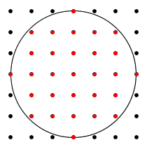
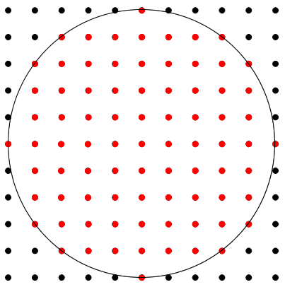

Nam là một sinh viên rất ham học hỏi. Mặc dù chỉ mới học được cách tô màu 1 pixel bằng thư viện graphics.h, nhưng Nam có thể vẽ được 1 hình tròn dễ dàng nếu biết bán kính và tọa độ tâm. Nam làm như thế nào? Đương nhiên là Nam tô màu từng pixel một rồi. Cứ tô từng pixel, từng pixel, cứ pixel nào ở trong hoặc nằm trên đường tròn thì tô, tô hết là được hình tròn thôi. Vậy theo bạn, Nam đã tô tổng cộng bao nhiêu pixel?

Dữ liệu nhập: 1 số tự nhiên không quá 1 triệu, thể hiện bán kính (tất nhiên đơn vị là pixel).
Dữ liệu xuất: 1 số nguyên dương, thể hiện số pixel mà Nam đã tô.
Với bán kính là 0. Nam tô 1 pixel là tâm hình tròn.
Với bán kính là 1. Nam tô 1 pixel là tâm và 4 pixel chung quanh. 4 pixel ở đường chéo không tô vì đã nằm ngoài đường tròn bán kính 1.
Với bán kính 5:
